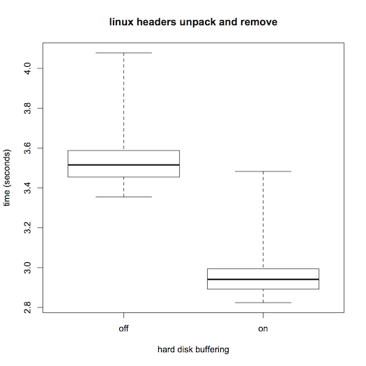

In this lab, you (and, optionally, a partner) will experimentally determine how performance-critical the Linux kernel's use of prepaging is for files that are mapped into virtual memory. That is, how much worse would performance be if Linux used only the simpler approach of demand paging?
My instructions assume you will be doing this on the computer you have been issued, running the Ubuntu distribution of Linux.
The following quote from pages 251–252 of our textbook provides some context for your experiment:
... Linux ordinarily uses a variant of prepaging ... for files mapped into virtual memory. This makes sense because
reading from disk is slow. However, if the application programmer notifies the operating system that a particular memory-mapped file is going to be accessed in a "random" fashion, then Linux uses demand paging for that file's pages. The programmer
can provide this information using the madvise procedure.
This provides a clue as to how you could modify the kernel to incorporate a selectable mode in which all prepaging is disabled, resulting in pure demand paging. Namely, we just need to find out where in the kernel the "random" option from madvise exerts its influence. Somewhere there must be one or more if statements that in effect say "if this virtual memory area is marked as randomly-accessed, use demand paging, otherwise prepaging." You just need that to say "if this virtual memory area is marked as randomly-accessed or prepaging is disabled, use demand paging, otherwise prepaging." One of my goals on the lab preview class period is to demonstrate how you would navigate through the kernel source code, starting from the madvise system call, to find the relevant if statements to modify.
Here is an overview of what you will need to do:
Modify the aforementioned if statements to optionally disable prepaging, depending on whether a global variable you add has a nonzero value.
Also modify the kernel so that the global variable is accessible through a special file in the /proc/sys/vm/ directory, so that you can control it during your experimentation.
Build and install the modified kernel and reboot running it.
Choose a workload for your experimentation. That is, you will need to focus on some specific use for Linux (such as running a particular program) to see how much its performance depends on prepaging.
Use a script to time lots of runs of your workload, in a randomized mix of the prepaging-disabled and prepaging-enabled conditions, flushing the page cache before each run.
Statistically summarize and assess your data, using graphical and numerical techniques to test whether prepaging made a difference, and if so, how large.
Write a clear, concise scientific report that explains what problem you addressed, the way in which you addressed it, and the results you obtained.
The line that says ... install install ... should only have one install, since install is the command
You will need to follow the instructions available on the web for
building a modified kernel. In particular, you should use the git method described on that page for obtaining the source code. Because you are using the 14.04.2 release of Ubuntu, which uses the kernel from the release codenamed "xenial," the specific command would be
git clone git://kernel.ubuntu.com/ubuntu/ubuntu-xenial.git
You may need to use apt-get source linux rather than linux-image as described.
You may also need sudo apt-get install kernel-wedge
You will also need to install the build environment as described on the same web page.
The final thing you can set going to save time later is an actual build of the kernel. Without modifying the configuration or any of the kernel source files, change directory to ubuntu-xenial and give the two fakeroot commands listed on the web page. The reason building the unmodified kernel helps is that when you make the experimental modifications, it will be possible to rebuild the kernel without it taking so long because not everything will need recompiling.
Once you have located the appropriate if statements, you should make two changes in that kernel source file:
Before the procedures in which the if statements appear, add a declaration of a new global variable, of type int, which will be used as a boolean flag to determine whether prepaging should be disabled. For example, your declaration might be
int disable_prepaging;
Change the if statements' conditions so that they take the variable into account.
Now comes the question of how you will make this variable easily readable and writable. You can use a general mechanism that allows a kernel variable to show up as a special file. That is, you can arrange that there is a special file, let's say /proc/sys/vm/disable_prepaging, that corresponds to the global variable. If anyone looks at the current contents of that file, they will see that it contains digits corresponding to the variable's current value. (For example, if the variable is set to 0, reading from the file will return the digit 0.) Conversely, if anyone writes a numeric value into the file in the form of decimal digits, that will set the variable. A script might use this approach to set the variable with the command:
echo 1 >/proc/sys/vm/disable_prepaging
In order to make the variable show up as a file in this way, you
need to edit another kernel source file, kernel/sysctl.c.
Near the top of this file, there is a comment:
/* External variables not in a header file. */
After that comment, you can add a declaration of your variable such as
extern int disable_prepaging;
Next, look for the section of this source file where the array vm_table is initialized, which starts with the line
static struct ctl_table vm_table[] = {
You should add one more element to this array initializer; putting it at the beginning would be fine. The new element couples together the name of the file, the address of the variable, the size of the variable, and some other related information. If you have used disable_prepaging as the name for both the file and the variable, then this name will show up three times, once for the file and twice for the variable:
{
.procname = "disable_prepaging",
.data = &disable_prepaging,
.maxlen = sizeof(disable_prepaging),
.mode = 0644,
.proc_handler = proc_dointvec,
},
After making these changes, you will rebuild the kernel. To reduce the build time from hours to tens of minutes, you will not use the "clean" build command that was shown on the web page. Instead, you will use the following two commands which leave most of the unchanged parts alone, which works on some installations.:
rm debian/stamps/stamp-build-generic fakeroot debian/rules binary-headers binary-genericIf that does not do it, or you do not even have the debian stamp file, redo the make-deb buid:
sudo make -j 4 deb-pkg LOCALVERSION=-mcs378
After the kernel is rebuilt, you need to change directory to the parent directory and install the resulting .deb packages:
cd .. sudo dpkg -i linux-headers*.deb linux-image*.deb
Once your new kernel is installed, you can reboot the computer. As the computer boots back up, wait until the DELL screen goes away and then hold the shift key down to cause the grub menu to display, which is where you can select which kernel to boot, in case you have more than one. If you have more than one kernel installed, you'll see "Advanced options for Ubuntu" in the menu; select it to show a submenu of the various kernel versions. Select the one you just installed.
Once you've installed your new kernel, be careful not to accept any automated offer of an "update" to the standard kernel. If you do accidentally let the software updater overwrite your kernel with the standard one, you can always reinstall your kernel from the .deb files. To check that your kernel is running and see the setting of disable_prepaging, you can use the following command:
cat /proc/sys/vm/disable_prepaging
Whenever testing the performance implications of an operating system change, you need to select a workload, because the performance change might be different for different workloads. Ideally your test workload should be a realistic reflection of the kinds of work people really use the system for, but be a simple, repeatable test that doesn't take unreasonably long to execute many times. These desiderata are inherently in conflict, so you will inevitably need to choose a tradeoff. For this lab, you might consider using one of the following, or perhaps several of them run in succession:
using the g++ compiler to compile and link a C++ program, the way you did in the prior lab
running a Python script, or even just a simple one-line Python computation such as
python -c 'print(2+2)'
starting up the emacs text editor and having it then immediately exit:
emacs -kill
starting up Libre Office and having it then immediately exit:
libreoffice --terminate_after_init
You'll need to run your workload lots of times, which would be a pain to do by hand. Additionally, if you were to do it by hand, you'd need to be very careful to get all the details right of running the workload the same way each time, except for the one intentional change of turning prepaging on or off. This is made more complicated by the fact there there would be some additional commands to run beyond the workload itself:
Before each run of the workload, you'll want to put the memory back into a clean starting state. The ideal would be a reboot, but that's a time-consuming nuisance. A reasonable compromise would be to use the following two commands:
sync echo 3 >/proc/sys/vm/drop_caches
The first of these writes any dirty pages (or other file-related information, such as directory entries) out to the disk. The second eliminates from memory any cached copies of previously-accessed pages (and other file-related information).
Before each run of the workload, you'll need to set prepaging to its disabled or enabled state, using a command such as shown earlier.
Assuming that you are writing the workload execution time out to a data file, you will probably also want to write out some identifying information so that it is clear which condition each time originated from.
An additional complication is that the runs with and without prepaging should be shuffled together in a random order. That way, if there is any extraneous factor that is making some runs take longer than others, it will be equally likely to influence runs of each of the two kinds.
All of this suggests that you could benefit from a little bit of machinery to help automate your experimentation. I suggest using two levels of scripting. The actual experiment can be run using a simple shell script (to be run with the bash command) that just lists one by one all the commands to execute. However, rather than your using a text editor to type in that shell script, you can use a higher-level program to generate the shell script. This higher-level program would take care of randomization and making all the right numbers of copies of the right commands. I suggest using a Python script for this higher-level program.
Let's work an example. Note that this example is not the same as what you'll need to do for the lab assignment, just analogous. You'll need to keep an eye out for the places where changes are appropriate.
Rather than exploring the performance impact of an operating system feature,
let's explore the performance impact of a hardware feature, the write buffering done within the disk drive.
This buffering can be turned on or off using the hdparm command. Normally it is on.
Let's see what impact this setting has on unpacking the Linux headers from the .deb file we just built and then removing the resulting directory tree. We'll use this as an example performance study not only in this section on scripting, but also in the later section on statistical analysis.
I've attached the Python script, named make-script.py, that I wrote to generate the shell script for this experiment. You would run it using a command like
python make-script.py >script.sh
This creates the shell script, script.sh. If you try this out, you may wind up with a somewhat different version that I've attached here, because the runs may be in a different random permutation. This script contains the detailed step-by-step instructions for conducting the experiment. To run it and put the resulting timing data in a file, you would use a command like
sudo bash script.sh >buffering.csv
This grinds away a few minutes doing the various experimental runs and in the process creates a file, buffering.csv, that shows the resulting times in a comma-separated-values form. In this CSV file, the first column is a 0 or 1 showing whether buffering was off or on for the particular run, and the second column is the resulting execution time of the workload, in seconds. The file also starts with a header row identifying each of the columns. (If you try this, your data will surely be
at least somewhat different. It may be greatly different because some of our laptops have a different
model of disk drive than the one I used for this example.)
I note in passing that the sudo command above means that the entire experimental run will be done as "super user" with full administrative privileges. That privilege level is needed for changing the system settings, but it isn't needed for the actual workload being timed. For simplicity, I ran the workload with privileges it didn't need. That is a really bad habit to get into because it means a bug or attack can have much greater consequences. Given that this experiment is being done on a computer used exclusively for experimentation, I'm not so concerned with maintaining its security and reliability.
You'll need to do something analogous to this experiment, but instead of turning disk buffering on and off, you'll turn prepaging on and off. And you'll use the workload you chose, rather than the unpack-and-delete workload used here. You should choose for yourself how many repetitions to do under each condition. That depends on such factors as how time consuming your workload is, how consistent the times are under each of the two conditions, and how big the performance effect is that you are measuring. You may want to do some preliminary, informal, experimentation to get a feel for those factors, before you settle on the number of repetitions to use in your actual experiment.
Continuing with our example from the previous section, we have a CSV file that shows the impact of disk buffering, but a long list of numbers isn't really a very helpful form in which to present the data. We can use the R system, a free statistics package, to summarize the data in both graphical and numerical form. The R system is installed on the MCS lab macs and you can also download your own copy if you would prefer. (It is available for a variety of platforms; I was able to install it under Ubuntu Linux, for example.)
Once I launched R, I entered the following two commands to read the CSV file into an R variable named bufferingData and then graphically summarize that data in a boxplot while simultaneously putting a numerical summary in the variable b:
bufferingData <- read.csv("buffering.csv")
b <- boxplot(time ~ buffering, data=bufferingData, range=0, names=c("off", "on"), main="linux headers unpack and remove", ylab="time (seconds)", xlab="hard disk buffering")
The resulting boxplot popped up in a separate window:
The dark horizontal line in each box indicates the median of the respective data set. You can see that the median time for the workload was larger when buffering was turned off, as you might expect. The lighter box surrounding each median indicates the middle half of the data, that is the range from the 25th to 75th percentile. The protrusions beyond the boxes (known as "whiskers") indicate the full range, all the way from the fastest run up to the slowest. From these, you can see at a glance that although the middle portions of the distributions are quite distinct, at least one of the runs with buffering on was as slow as a typical run with buffering off; the ranges definitely overlap. On the other hand, the overlapping cases are limited to at most the slowest 5 of the 20 runs with buffering on. Even without a formal statistical test of significance, the rarity of the overlap provides evidence that disk buffering does affect this workload's performance. Other facts that are apparent include that the distributions are rather asymmetrical and that they don't have the same dispersion as each other. These suggest we will need to exercise care in selecting a formal statistical test; a test that presumes equal-variance normal distributions would be badly off the mark.
This boxplot would be well worth including in a scientific report of the experiment. However, it would also be useful to provide a numerical summary of the same information. This summary was saved in the R variable named b. Simply entering b on a line by itself prints out its value, which starts with the following:
$stats
[,1] [,2]
[1,] 3.3550 2.824
[2,] 3.4550 2.892
[3,] 3.5155 2.941
[4,] 3.5880 2.994
[5,] 4.0780 3.483
Translating this into English, we'd say that turning disk buffering off increases the median execution time from 2.941 seconds (range: 2.824–3.483) to 3.5155 seconds (range: 3.355–4.078). The corresponding interquartile ranges are 2.892–2.994 and 3.455–4.078.
These graphical and numerical descriptive statistics go a long way towards making the experimental results understandable. However, we can also go a bit further and use statistical hypothesis testing and a confidence interval estimator to answer two questions: might the apparent effect plausibly be coincidental, and how well, with our limited data, have we pinned down the size of the effect?
Given that the data isn't normally distributed, the safest approach would be to use an exact test based on ranks. For example, consider a simpler situation in which the two distributions didn't overlap at all, so that positions 1–20 were occupied by times from the buffering-on condition and ranks 21–40 were occupied by times from the buffering-off condition. That would be extremely unlikely to happen by chance if the two conditions were just meaningless labels applied to data all drawn from a single distribution. In fact, the chance of it happening is exactly 1 in C(40, 20), the number of ways to choose 20 items out of 40. An equally extreme result in the other direction would be just as unlikely. Therefore, if we had obtained such a complete lack of overlap, we would have been able to reject the idea that buffering doesn't matter, with a p-value of 2/C(40,20), which equals 1.45×10−11. This p-value being so small would indicate that the "null hypothesis," that there was no effect, would have been very implausible in this no-overlap scenario. That would have given us reason to believe the alternative hypothesis, that disk buffering has an impact on execution time. Calculating this one p-value for the no-overlap case wasn't too difficult, but for more general cases such as we actually encountered, in which the ranks aren't so cleanly divided, the calculation is best left to the R system. It goes by the name of the Wilcoxon test.
To load in a library of exact rank tests, you can give this command to R:
library("exactRankTests")
The first time you do this, you may get an error message that the library isn't installed on your system. In this case, you can first install it using
install.packages("exactRankTests")
and then go back to the library command. In any case, once it is loaded in, the exact Wilcoxon test can be applied to the data we loaded from the CSV file:
wilcox.exact(time ~ buffering, data=bufferingData, conf.int=TRUE)
The output is as follows:
Exact Wilcoxon rank sum test
data: time by buffering
W = 392, p-value = 9.431e-10
alternative hypothesis: true mu is not equal to 0
95 percent confidence interval:
0.519 0.630
sample estimates:
difference in location
0.5665
The p-value is listed as 9.431e-10, which is to say, 9.431×10−10, still a very small number, although larger than 2/C(40, 20) as a result of the overlapping ranges. Because this p-value is small, the test supports the alternative hypothesis that mu (the increase in time caused by turning buffering off) is not equal to 0. Moreover, because we provided the option conf.int=TRUE, we also get information on how well pinned down this increase is. (If we had taken more data than 20 repetitions of each condition, we might have pinned it down more closely.) With 95% confidence we can say that the increase is somewhere between 0.519 and 0.630 seconds. Our best estimate of the increase is 0.5665 seconds, a value similar to the difference between the medians.
The preceding section described how to generate a boxplot in R. That's fine for looking at it, but in order to incorporate it into your report, you'll need to save it into a file. You could use a general "screen shot" feature to capture the image off the screen, but that saves it as a bitmap image at the screen resolution, which will look jagged if scaled. You are better off generating a scalable, resolution-independent PDF version of the boxplot.
If you are using R on a Mac, all you need to do is display the boxplot and then press command-S (or select Save from the File menu). This opens a panel with which you can select the name of the PDF file.
An alternative technique works no matter what system you are working on, including in particular if you are running R on the Linux system used for the experiments. First, enter a command like the following in R:
pdf("someFileName.pdf")
Then, enter the boxplot command as usual. This time no window will pop open: the boxplot is going to the PDF file instead of a window. After the boxplot command, give one more command in R to finish writing the file:
dev.off()
As described in the introduction, you are to "Write a clear, concise scientific report that explains what problem you addressed, the way in which you addressed it, and the results you obtained." This implies that the focus ought not be on the technical details of your kernel changes. It would be entirely appropriate in the body of your report to simply say that you changed the kernel so that prepaging could be disabled, without going into any more detail than that.
However, it would also be appropriate to include an appendix that shows exactly what lines of code you changed or added in the kernel. The best way to get this would be to change directory (in a terminal shell) to ubuntu-utopic and then give a command such as this:
git diff >../kernel-changes.txt
This will leave you with a file in the parent directory called kernel-changes.txt that shows exactly what was changed. You can submit that file as your appendix.
You can earn extra grade points by investigating either of the following two questions, or feel free to suggest another of your own devising. I'd be glad to discuss how you might approach these.
In this lab, you investigated how much worse pure demand paging is than the usual fetch strategy that includes prepaging. Going the other direction, how much better is performance if the relevant file pages are in the page cache from a prior run of the workload?
The laptop I issued you includes a solid state drive (SSD). I didn't install Ubuntu onto it because its capacity is too limited to support our full range of course activities. However, you could install Ubuntu and your modified kernel onto it, boot off of it, and repeat your experiments. How do pure demand paging and the usual fetch strategy perform on the SSD as compared with the usual rotating drive?
Your "clear, concise scientific report" should be formatted into a single PDF file that incorporates such elements as a boxplot and an appendix of kernel changes. You should upload that file to moodle.
Instructor: Jeff Engelhardt